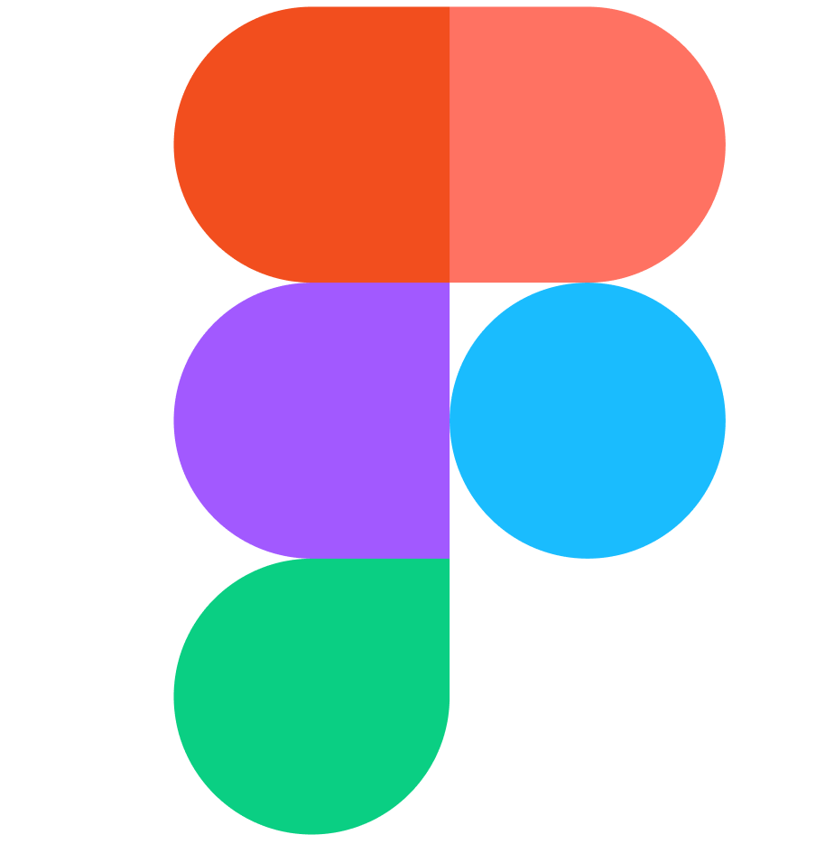
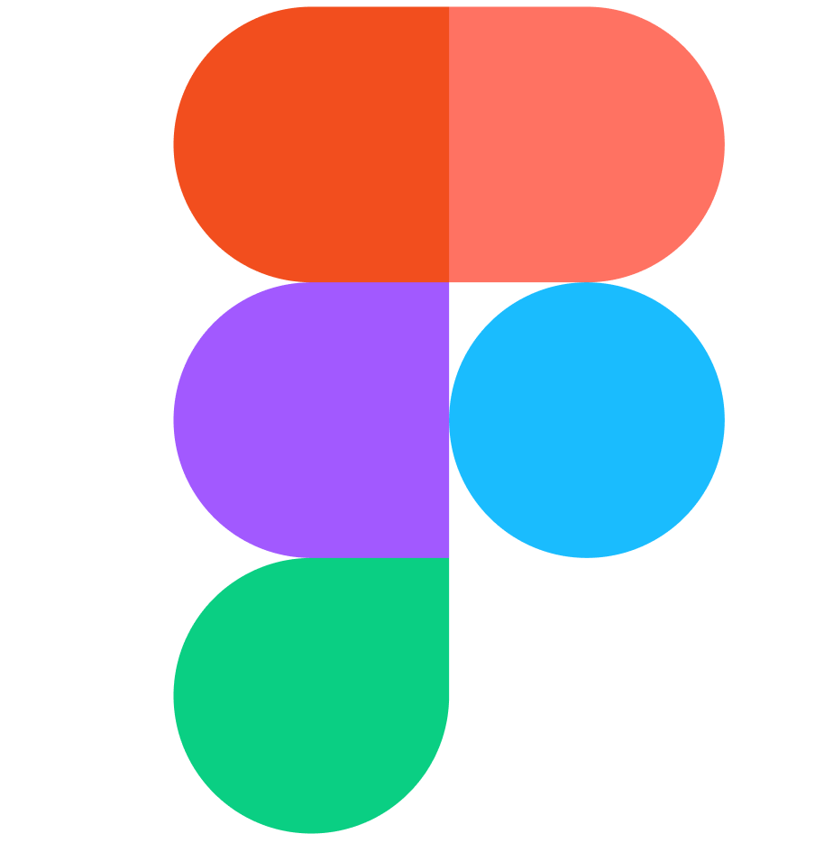
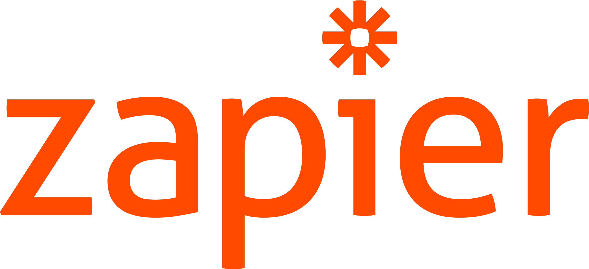
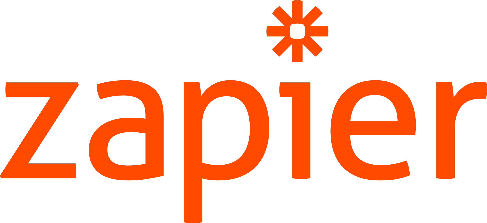
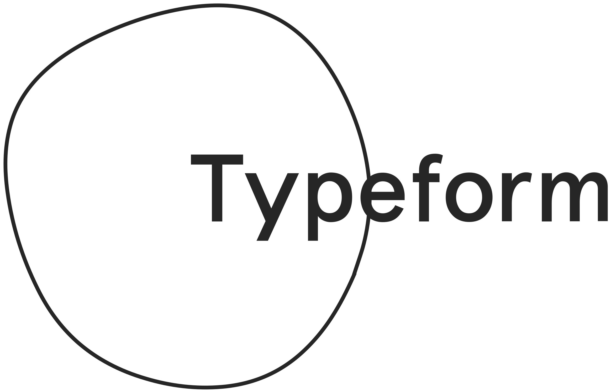
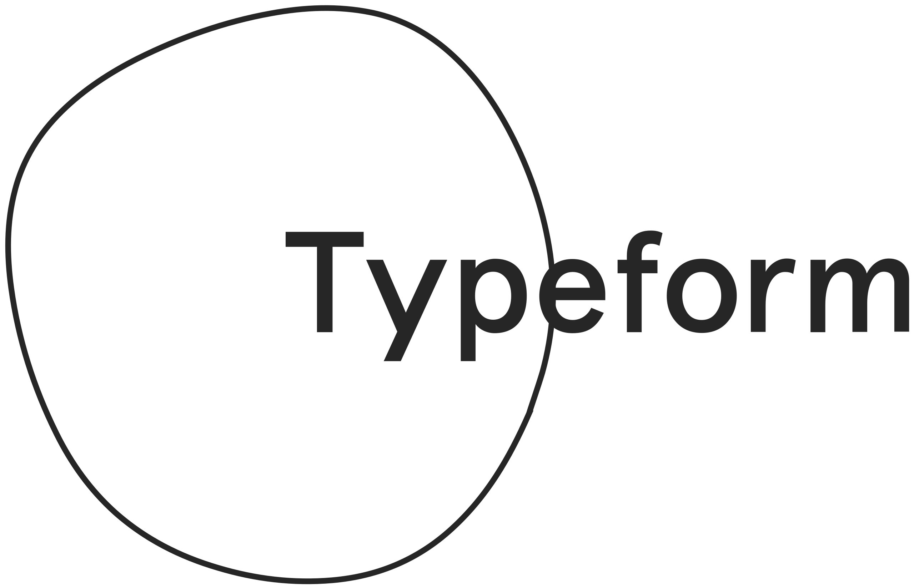

Axelle, enchantée 👩🏾💻 !
Étudiante en Master 1 Digital Marketing à l'IÉSEG School of Management
Me contacter 🚀Qui suis-je ?
Curieuse et néophile, je possède plusieurs expériences professionnelles dans l'univers du digital. En effet, passionnée par l'impact du numérique dans notre société, c'est dans cette voie que j'ai choisie d'évoluer. Par ailleurs, soucieuse des enjeux environnementaux et sociaux, le secteur de la RSE ainsi que l'entrepreneuriat social m'intéressent tout particulièrement.
Ma formation c'est...
-
2 années de DUT GEA (Gestion des Entreprises et des Administrations)
✔ Qui m'ont permis d'acquérir des connaissances générales liées au monde de l'entreprise
-
1 année de Licence : Management et Gestion des Organisations parcours Entrepreneuriat
✔ Qui m'a permis de me spécialiser et de m'immerser dans l'univers entrepreneurial
-
Actuellement en 1ère année de Master Programme Grande École à l'IÉSEG
✔ Intégrée à la majeur Digital Marketing afin d'acquérir une double spécialisation.
Mes compétences

 

 

 
